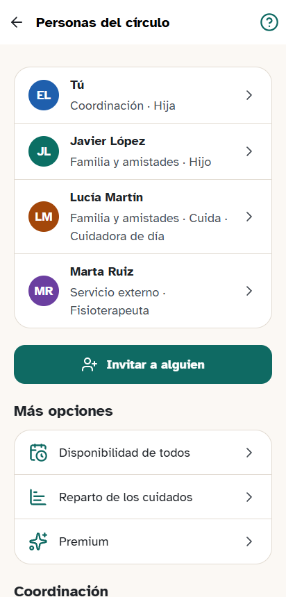

Inicio › Manual › Personas del círculo
Personas del círculo
Quién está en el círculo y qué puede hacer cada uno.

Las personas
Aquí está todo el círculo con su papel y su color. Cada persona elige su color en su perfil, y con él salen sus turnos en el calendario.
Invitar a alguien
Solo para: coordinación
Pulsa «Invitar a alguien», elige el papel y pásale el código que sale (por WhatsApp, por ejemplo). Solo se muestra una vez, caduca a los 7 días y sirve para una persona.
Cambiar papel o permisos
Solo para: coordinación
Toca a una persona para cambiar su papel o ajustar lo que ve (por ejemplo, si la familia ve el calendario o un profesional puede dar la medicación). También puedes quitarla del círculo.
Compartir o pasar la coordinación
Solo para: coordinación
Para pasar el relevo, pulsa «Traspasar la coordinación», elige a quién y qué papel tendrás tú después. Esa persona recibe un aviso y lo acepta o lo rechaza en el inicio del círculo; hasta entonces sigues coordinando tú. La propuesta caduca a los 7 días.
También puede haber varias personas coordinando a la vez: toca a una persona, elige el papel «Coordinación» y guarda.
Reparto de los cuidados
✦ Premium · Solo para: coordinación, quien cuida, familia y amistades
Quién ha cubierto cuántos turnos y horas, quién ha acompañado a las citas y quién ha pagado cuánto. Ayuda a repartir de forma justa.
¿Aún no usas Tutelia?
Es gratis para organizar el día a día entre varias personas. Así se empieza.